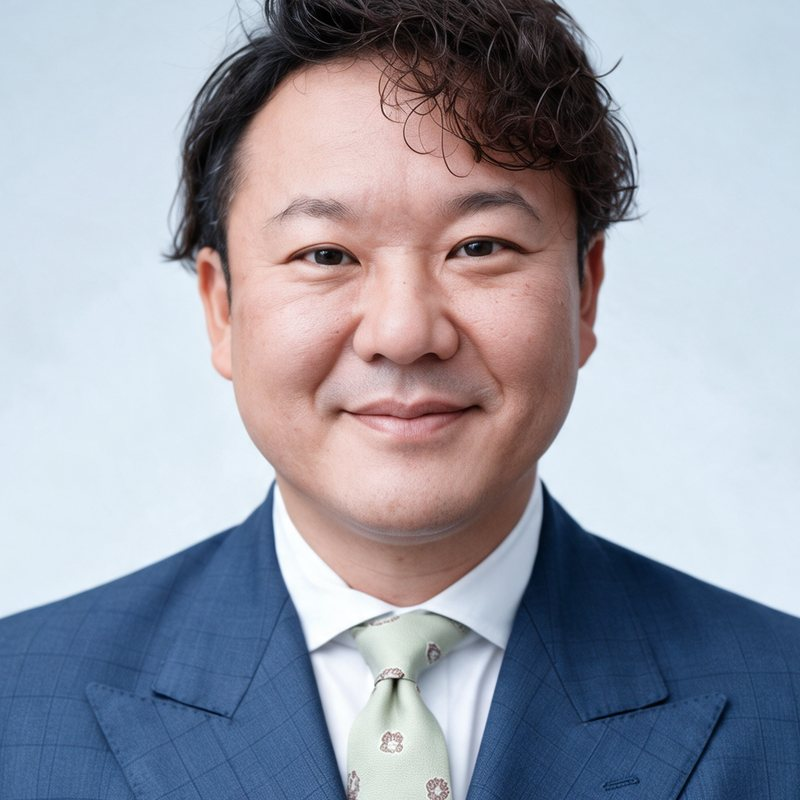

建設業の経営者・幹部向け AI活用ライブウェビナー
AIを「使う」から、AIが「働ける」会社へ。
建設会社の経営者が語る、
AI導入と仕組みづくりのリアル。
LIVE成功も失敗も、現在進行形の取り組みを公開する2時間
ウェビナー
申し込みはGoogleフォームで受け付けています
WORRIES
こんなことを、感じていませんか
-
AIが便利なのは分かるけれど、自分たちの会社でどう活用すればいいのだろう？
-
ChatGPTなどは使っているけれど、会社全体の業務に取り入れるところまでは進んでいない
-
AIを導入したい気持ちはある。でも、人材も時間も足りず、なかなか一歩を踏み出せない
そんなことを感じたことはありませんか？
AIの活用方法は、会社の規模や業務内容、抱えている課題によって大きく異なります。
だからこそ、単に便利なAIツールを知るだけでなく、
「自分たちの会社で、AIが実際に働ける環境をどうつくるのか」
という視点が重要になってきます。
今回のライブウェビナーでは、業務用空調設備の施工・修理・保守などを手がける伊藤テクノ株式会社の代表取締役・伊藤丈史が、自社で進めてきたAI導入と仕組みづくりについて、実際の取り組みを交えながらお話しします。
REAL
完成した成功談ではなく、
現在進行形のリアルを。
AIが活躍できるように、会社側がどんな環境や仕組みを用意し、どのように仕事を任せ、運用していくのか。
伊藤テクノ株式会社では、AIを単なる便利なツールとして利用するだけでなく、会社のさまざまな業務に組み込み、社員とともに活用できる環境づくりを進めています。
重要なのは、AIに何ができるかということだけではありません。
外部にすべてを任せて完成した仕組みを導入するのではなく、自社が主体となって取り組み、実際に運用しながら改善を重ねていく。
その過程では、思うようにいかないことや、新たに見えてくる課題もあります。
伊藤テクノの取り組みも、決して完成形ではありません。今もなお、社員とともに試行錯誤を繰り返しながら、AIがより活躍できる会社の仕組みを目指して進化を続けています。
今回お伝えするのは、そんな実践の過程そのものです。
うまくいったことだけでなく、苦労したこと、現在も取り組んでいる課題まで。実際に会社を経営し、自社でAIの導入と運用を進めているからこそ語れる、リアルな経験をお届けします。
CONTENTS
このウェビナーでお伝えすること
-
AIを会社に取り入れるとは、どういうことなのか？
AIを個人の便利なツールとして使うことと、会社の業務に組み込んで活用すること。その違いや、AIが働ける環境をつくるための考え方を紹介します。
-
AIが働ける仕組みを、どうつくり、育てていくのか？
伊藤テクノで進めているAI導入の全体像をもとに、社内での仕組みづくりや運用、改善を重ねていくプロセスを紹介します。
-
実際にAIは、会社の中でどのように活躍しているのか？
現在のAI活用の様子や仕組みを実際にご覧いただきながら、日々の業務にAIを取り入れることで、どのような可能性が広がるのかを考えます。
-
導入の過程で、どんな課題や苦労があったのか？
実際に取り組む中で直面した課題や試行錯誤、現在も改善を続けている部分など、完成された成功事例だけでは見えてこない現実をお伝えします。
SPEAKER
講師紹介

講師
伊藤 丈史
いとう たけし
- 伊藤テクノ株式会社 代表取締役
- 一般社団法人建設職人甲子園 代表理事
業務用空調設備の販売・施工・修理・保守を中心に、電気工事や建物設備の改修・修繕などを手がける伊藤テクノ株式会社を経営。
自社でもAIの導入と業務の仕組み化を推進し、社員とともに、AIが活躍できる環境づくりに取り組んでいる。
講師・伊藤丈史に、
AI活用を30分無料で相談できます
当日ご参加いただいた方のうち、ご希望の方に、伊藤丈史によるAI活用に関する無料相談（30分）を実施します。
ウェビナーを聞いて浮かんだ、自社での活かし方の疑問を、直接ぶつけてみてください。
対象：当日ご参加いただいた方のうち、ご希望の方FOR YOU
こんな方におすすめです
- AIには興味があるけれど、自社で何ができるのかイメージできていない
- ChatGPTなどを利用しているが、個人での活用にとどまっている
- AIを会社に導入したいものの、何から取り組めばよいか分からない
- 社内への導入を進めているが、思うように活用できていない
- 実際にAI導入を進めている建設業経営者の経験を聞いてみたい
- AIを活用した業務改善や、会社の仕組みづくりに関心がある
MESSAGE
「自社でも、何かできるかもしれない」
AIを活用するための環境や、取り組むべき課題は会社によって違います。
だからこそ、今回のウェビナーで特定のツールや導入方法を一方的におすすめするわけではありません。
実際にAI導入を進めている建設会社の取り組みを知り、その背景にある考え方や試行錯誤に触れることで、
「うちの会社なら、どんなことに活用できるだろう？」
「今まで当たり前にやっていた仕事も、違う方法で進められるかもしれない」
そんな新しい可能性を見つけるきっかけにしていただきたいと考えています。
AIをまだ使っていない方も、すでに使い始めている方も。
自社のこれからを考える機会として、
ぜひご参加ください。
OUTLINE
開催概要
建設業の経営者・幹部向け AI活用ライブウェビナー
- 日時
- 2026年11月24日（火） 17:00〜19:00
- 開催形式
- オンライン（Zoomウェビナー）
- 参加費
- 無料
- 対象
- 建設業の経営者・幹部の方
- 講師
- 伊藤 丈史
- 主催
- 一般社団法人建設職人甲子園
FAQ
よくある質問
QAIをまだ使ったことがなくても参加できますか？
はい、参加できます。AIをまだ使っていない方も、すでに使い始めている方もご参加ください。
Q参加費はかかりますか？
無料です。
Q特典の無料相談は、誰でも受けられますか？
当日ご参加いただいた方のうち、ご希望の方に、伊藤丈史によるAI活用に関する無料相談（30分）を実施します。
Q申し込みのときに、何か入力が必要ですか？
お申し込みの際に、現在のAI活用状況や日頃の業務に関する簡単なアンケートへのご協力をお願いしています。
Qどうやって参加しますか？
オンライン（Zoomウェビナー）で開催します。お申し込みいただいた方に、参加用のZoomのURLを後日ご案内いたします。
Q申し込みの締め切りはいつですか？
開催日の前日、2026年11月23日（月・祝）までにお申し込みください。
Q録画は見られますか？
お申し込みいただいた方には、後日アーカイブ（録画）の配信を予定しています。
ENTRY
お申し込み
参加をご希望の方は、以下の申込フォームよりお申し込みください。
当日参加者特典：ご希望の方に、伊藤丈史へのAI活用無料相談（30分）
お申し込みはこちらGoogleフォームが新しいタブで開きます
※お申し込み時に、現在のAI活用状況や日頃の業務に関する簡単なアンケートへのご協力をお願いしています。
皆さまのご参加をお待ちしております。